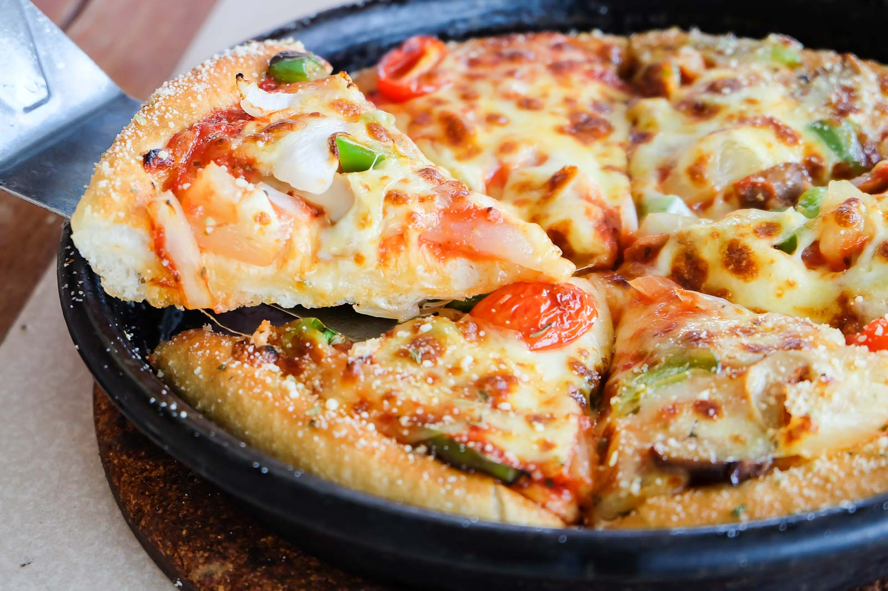

Pan-style Cheese Pizza

Description
A classic pizza made in a pan, which allows it to have
thicker and fluffier slices!
Ingredients
-
Pizza dough
-
Cheese
- Any toppings of your liking!
-
Pizza sauce
-
Cast iron pan!
-
Vegetable Oil
Instructions
-
Kneed the dough
-
Prepare the pan for pizza to cook. Oil it generously and put about 1 tablespoon semolina and rotate the pan to cover the base and edges.
-
After 90 minutes, dough will be doubled in size
-
Oil hands and start placing and flattening the dough to fit the pan
-
Top each pizza with pizza sauce, and cheese and whatever
other toppings!
-
Cook pan pizza on for about 10-12 minutes
-
ENJOY!